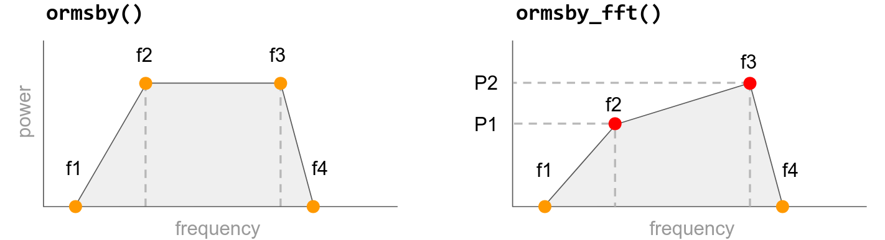

Making wavelets#
Bruges has implementations of several common wavelets:
Ricker.
Ormsby (implemented in time and in frequency, with slightly different features).
Klauder (aka ‘sweep’, a good choice for Vibroseismic modeling).
Berlage (a good choice for marine seimsic shot with an airgun).
Sinc.
Gabor.
Gaussian.
All of the wavelets have these features:
They return a tuple of 2 arrays by default: the wavelet’s amplitudes and the time samples.
They guarantee an odd-length wavelet.
They can all take a time array if you want specific time samples instead of a specific time duration.
They can all take a frequency array (a 2D array for Ormsby and Klauder) providing a range of frequencies in a single two-dimensional wavelet ‘bank’. See below for examples.
Let’s take a look at examples illustrating some of these features.
Ricker wavelet#
We’ll start with the simplest, commonest case: a Ricker wavelet, sometimes called a Mexican Hat wavelet, with its easy-to-understand central frequency.
We pass in three key parameters:
duration— the total length of the pulse in seconds, e.g.0.128for a wavelet 128 ms long.dt— the interval between time samples in seconds, e.g.0.004for a 250 Hz sample rate.f— the dominant frequency of the wavelet in Hertz, eg25for a low-frequency pulse.
Let’s make one and plot it:
import matplotlib.pyplot as plt
import bruges as bg
w, t = bg.filters.ricker(duration=0.096, dt=0.001, f=25)
plt.plot(t, w)
[<matplotlib.lines.Line2D at 0x7f7180deb1f0>]
Easy right?
Let’s annotate the plot a bit so you can see exactly what’s going on:
fig, ax = plt.subplots(figsize=(8, 3))
ax.plot(t, w)
ax.grid(c='k', alpha=0.15, lw=0.75)
ax.axhline(0, c='k', alpha=0.3)
ax.axvline(0, c='k', alpha=0.3)
ax.set_xlabel('Time [s]')
ax.set_ylabel('Amplitude')
ax.set_title('Ricker wavelet, 25 Hz')
Text(0.5, 1.0, 'Ricker wavelet, 25 Hz')
The wavelet has an odd number of samples. In general, filters should have odd length, otherwise you have to deal with time shifts when the filter acts on your data.
Both w and t are NumPy arrays, so we can easily get information about them:
w.shape
(97,)
A bank of Rickers#
Passing a range of frequencies results in a range of wavelets, compiled into a 2D array. Let’s make a bank with frequencies from 4 to 48 Hz in steps of 2 Hz:
import numpy as np
freqs = np.arange(4, 50, step=2)
freqs
array([ 4, 6, 8, 10, 12, 14, 16, 18, 20, 22, 24, 26, 28, 30, 32, 34, 36,
38, 40, 42, 44, 46, 48])
w, t = bg.filters.ricker(duration=0.096, dt=0.001, f=freqs)
w.shape
(23, 97)
It makes the most sense to plot this 2D array as an image:
plt.imshow(w)
<matplotlib.image.AxesImage at 0x7f717eb83f10>
Again, let’s embellish it a bit for clarity:
extent = [t[0], t[-1], freqs[0], freqs[-1]]
fig, ax = plt.subplots(figsize=(8, 3))
ax.imshow(w, extent=extent, aspect=0.001, origin='lower')
ax.set_xlabel('Time [s]')
ax.set_ylabel('Frequency [Hz]')
ax.set_title('Bank of Ricker wavelets')
Text(0.5, 1.0, 'Bank of Ricker wavelets')
Ormsby wavelet#
The Ormsby wavelet is broader band and therefore a bit more realistic than the Ricker wavelet for most modern datasets. (Ormsby wavelets have a trapezoidal spectrum, whereas that of the Ricker is Gaussian.)
You need to specify four frequencies when defining an Ormsby wavelet: the low-cut, the low-pass, the high-pass, and the high-cut. Together, these define a trapezoidal spectrum.
Here’s an example:
w, t = bg.filters.ormsby(duration=0.4, dt=0.001, f=[4, 8, 45, 60])
plt.plot(t, w)
[<matplotlib.lines.Line2D at 0x7f717ec47d90>]
Compared to Rickers, these wavelets need to be rather long in order to accommodate the longers wavelengths.
Ormsby FFT#
There’s a second implementation of the Ormsby wavelet that allows you to define a different shape. Instead of the spectrum having a flat top, you can give it ‘colour’ (more or lower or higher frequencies) by providing two extra values for the power of the f2 and f3 frequencies, given in relative dB:

The powers of f1 and f4 are assumed to be minus infinity (a magnitude of 0).
Let’s make a wavelet like the previous one, but we’ll reduce the power of the higher frequencies by 15 dB:
w, t = bg.filters.ormsby_fft(duration=0.400, dt=0.001, f=[4, 8, 45, 60], P=[0, -15])
plt.plot(t, w)
[<matplotlib.lines.Line2D at 0x7f717ead8af0>]
Klauder wavelet#
This is a good choice for simulating Vibroseis data. The wavelet is the autocorrelation of a sweep, such as you might get from a Vibroseis truck.
For this wavelet, you must provide the sweep start and end:
w, t = bg.filters.klauder(duration=0.400, dt=0.001, f=[4, 40])
plt.plot(t, w)
[<matplotlib.lines.Line2D at 0x7f717eb44df0>]
Any other keyword arguments are passed back to scipy.signal.chirp. You may especially want to change:
method— one of ‘linear’, ‘quadratic’, ‘logarithmic’, or ‘hyperbolic’; the shape of the sweep. Default is ‘linear’.phi— the phase offset, in degrees; default is 0.
Let’s look at logarithmic sweep:
w, t = bg.filters.klauder(duration=0.400, dt=0.001, f=[4, 40], method='logarithmic')
plt.plot(t, w)
[<matplotlib.lines.Line2D at 0x7f717e9b91b0>]
Berlage wavelet#
This minimum phase wavelet implements David F. Aldridge, (1990), The Berlage wavelet, GEOPHYSICS 55, 1508-1511, DOI 10.1190/1.1442799.
It takes a dominant frequency, as well as optional parameters for the time exponent n, the exponential decay alpha, and the phase of the wavelet phi (default: -pi/2).
w, t = bg.filters.berlage(duration=0.400, dt=0.001, f=25)
plt.plot(t, w)
[<matplotlib.lines.Line2D at 0x7f717ea12410>]
The generalized wavelet#
The generalized function implements Yanghua Wang (2015), Generalized seismic wavelets, Geophysical Journal International 203 (2), p 1172–1178, https://doi.org/10.1093/gji/ggv346
Here’s part of the abstract from that paper, explaining the utility of these wavelets:
The Ricker wavelet, which is often employed in seismic analysis, has a symmetrical form. Seismic wavelets observed from field data, however, are commonly asymmetric with respect to the time variation. In order to better represent seismic signals, asymmetrical wavelets are defined systematically as fractional derivatives of a Gaussian function in which the Ricker wavelet becomes just a special case with the integer derivative of order 2.
This fractional derivative parameter, u, is 2 by default. So if you don’t change it, this function produces a Ricker wavelet:
w, t = bg.filters.generalized(duration=0.096, dt=0.001, f=25)
plt.plot(t, w)
[<matplotlib.lines.Line2D at 0x7f717e882bf0>]
Let’s change u to 1.75:
w, t = bg.filters.generalized(duration=0.096, dt=0.001, f=25, u=1.5)
plt.plot(t, w)
[<matplotlib.lines.Line2D at 0x7f717e8f1e70>]
This looks a little like a phase rotation, but it’s subtly different. Let’s compare (but read the paper to find out more).
w_0, t = bg.filters.generalized(duration=0.096, dt=0.001, f=25, u=2)
w_rot = bg.filters.rotate_phase(w_0, -0.6) # radians
plt.plot(t, w, label='generalized')
plt.plot(t, w_rot, label='phase rotation')
plt.legend()
<matplotlib.legend.Legend at 0x7f717e958d00>
You can also pass an array for u to see the full range of wavelets:
w, t = bg.filters.generalized(duration=0.096, dt=0.001, f=25, u=np.linspace(0.1, 3))
plt.imshow(w)
<matplotlib.image.AxesImage at 0x7f717e7bbca0>
Bend your mind! Pass an array to both and have fun exploring the 3D wavelet bank that results:
freqs = np.arange(4, 81, 2)
us = np.arange(0.1, 3, 0.1)
w, t = bg.filters.generalized(duration=0.096, dt=0.001, f=freqs, u=us)
w.shape
(29, 39, 97)